The field
Advancing ocean observation, alongside the world's leading institutions.


We're building a living early warning system for the ocean, reading the sea's smallest signals in real time, so no coastline is ever caught blind.
Why it matters
of the world's oxygen is produced by plankton. They also drive the carbon pump.
of the planet is ocean, and most of it goes unwatched in real time.
is how long bloom confirmation still takes, while a bloom can turn toxic in hours.
The vision
Imagine every coastline monitored in real time: plankton imaged at the water's edge, classified and validated by experts, and checked against known thresholds the moment something shifts. Not sampled once a month and mailed to a lab. Read continuously, everywhere, together.
That's what Pelagica is building: the tools to turn the ocean's earliest, smallest warnings into action.
Early warning
The moment a monitored species climbs past its threshold, an alert goes out: to a dashboard, an inbox, a phone.
Illustrative preview. These are demonstration alerts built from synthetic sample data to show how the system will work. Not live measurements or official advisories.
Explore
Every observation is an imaged plankton cell, geolocated by the PlanktoScope that captured it and confirmed by experts.
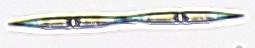
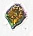
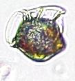
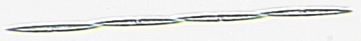
✓ validated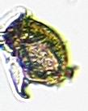
✓ validated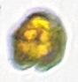
✓ validated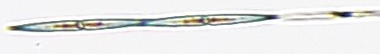
✓ validated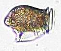
✓ validated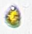
✓ validated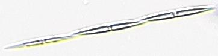
✓ validated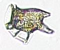
✓ validatedIllustrative preview. The imaged cells are real; counts, locations, and validation states are sample data.
Ground truth
Every PlanktoScope sample sits beside live satellite chlorophyll (NASA GIBS) and CeNCOOS stations, so a real cell count can confirm, or correct, what the satellite sees from orbit. The map loads external data only when you scroll to it.
6 monitoring stations across the network. Live satellite chlorophyll © NASA EOSDIS GIBS; basemap © OpenStreetMap, CARTO. Sample points are illustrative.
Compare
Your readings beside a benchmark node for the same waters, over the last two weeks.
Illustrative comparison. Synthetic sample data.
How it works
A shared model proposes what each imaged cell is; experts confirm or correct it; those corrections train the next model for every instrument on the coast.
Contributors and benchmark nodes image real plankton, drop by drop, across the coast.
9 contributors · 6 nodesA shared model proposes a taxon and a confidence for every imaged cell, the same model for everyone.
291 awaiting reviewExperts confirm the right calls and correct the wrong ones. Each decision becomes a labelled example.
192 labels · 3 expertsThose labels train the next model. Sharper detection returns to every instrument on the network.
32 corrections fed backThe loop closes: a better shared model raises every future reading's accuracy. Today it classifies and validates. Over time, the same growing record becomes forecasts that anticipate blooms before they start.
Counts are illustrative. The validation states, confidence, and model version are the real fields the platform will track.
The instrument
PlanktoScope is an open source plankton imager with onboard AI. Field ready, lab grade, and affordable enough to put on every dock and every hull, it's the sensor that turns a vision into a network.
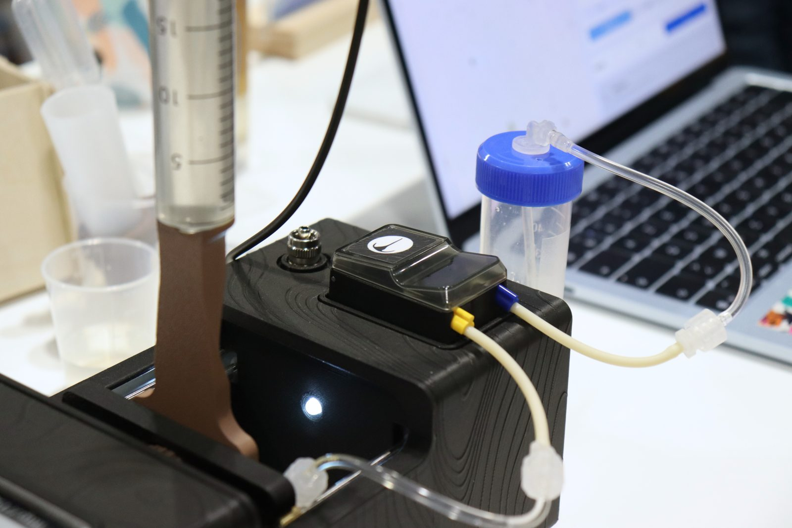
Who it's for
The people and institutions that act on what the ocean is doing, long before it reaches the shore.
The field
Get involved
Follow the work, or reach out if you want to help make monitoring at ocean scale real.